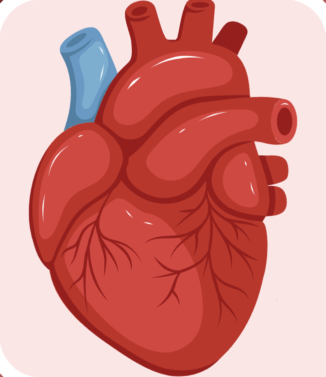

Modul Kardiovaskular

Referensi
- Moore KL, Dalley AF, Agur AMR. Clinically oriented anatomy. 8th ed. Philadelphia: Wolters Kluwer; 2018.
- Tortora GJ, Derrickson B. Principles of anatomy and physiology. 15th ed. Hoboken: Wiley; 2017.
- Hall JE, Hall ME. Guyton and Hall textbook of medical physiology. 14th ed. Philadelphia: Elsevier; 2021.
- Brignole M, Moya A, de Lange FJ, Deharo JC, Elliott PM, Fanciulli A, et al. 2018 ESC guidelines for the diagnosis and management of syncope. European Heart Journal. 2018 Mar 19;39(21):1883–948.
- Mescher AL. Junqueira’s basic histology: text and atlas. 15th ed. New York: McGraw-Hill Education; 2018.
- Betts JG, Young KA, Wise JA, Johnson E, Poe B, Kruse DH, et al. Anatomy and physiology 2e [Internet]. Houston: OpenStax; 2022 [cited 2026 Nov 20]. Available from: https://openstax.org/details/books/anatomy-and-physiology-2e
- Wineski LE. Snell’s clinical anatomy by regions. 10th ed. Philadelphia: Wolters Kluwer; 2019.
- Paulsen F, Waschke J, editors. Sobotta atlas of anatomy. Vol. 3, Head, neck and neuroanatomy. 16th ed. Munich: Elsevier; 2018.
- Visseren FLJ, Mach F, Smulders YM, Carballo D, Koskinas KC, Bäck M, et al. 2021 ESC guidelines on cardiovascular disease prevention in clinical practice. European Heart Journal. 2021 Aug 30;42(34):3227–337.